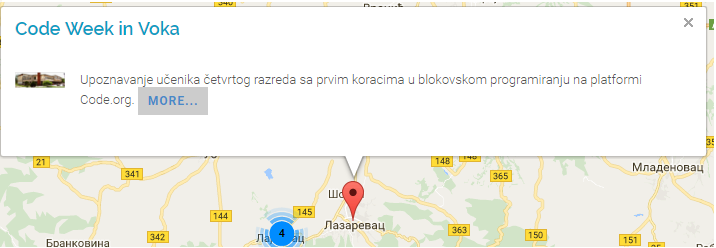

Свим ученицима желимо леп провод током зимског распуста. Видимо се поново 12.фебруара...

НОВОГОДИШЊА ЧАРОЛИЈА
Покренули смо чаролијуу приредбом у Дому културе у којој је учествовало више од сто ученика из продуженог боравка наше школе. Дружење смо наставили у холу школе, где су ученици са својим родитељима учествовали у радионици и показали своје вештине у креативном и ликовном стваралаштву.
Погледајте слике...
Јавна набавка добара - извођење екскурзије и наставе у природи
Обавештење о закљученом уговору
ОПШТИНСКО ТАКМИЧЕЊЕ У КОШАРЦИ
На Оштинском такмичењу из кошарке остварени су следећи резултати:
5 и 6 разред - дечаци су освојили 1. место.
7 и 8 разред - девојчице су освојиле 1. место.
7 и 8 разред - дечаци освојили су 2. место.
НАГРАДНИ КОНКУРС ФОНДАЦИЈЕ "Тијане Јурић"

У оквиру обележавања Дана сигурнијег интернета (6.фебруар) Фондација "Тијана Јурић" је припремила активности у које се могу укључити и ученици наше школе:
| 1. |
Наградни конкурс за најбољи плакат |
| 2. |
Наградни квиз |
Драги ученици, укључите се у наведене активности и освојите вредне награде:
| 1. награда |
МОБИЛНИ ТЕЛЕФОН |
| 2. награда |
ТАБЛЕТ РАЧУНАР |
| 3. награда |
УСБ меморија |
Више о овом догођају прочитајте на блогу Вока Информатика
ШКОЛСКО ТАКМИЧЕЊЕ ИЗ МАТЕМАТИКЕ
У петак 19. јануара 2018. године одржано је Школско такмичење из математике за ученике од трећег до осмог разреда са почетком у 12 часова. Пријавило се 143 ученика а учествовало их је 134 ученика и то:
| 3. разред |
35 ученика |
|
6. разред |
16 ученик |
| 4. разред |
31 ученик |
|
7. разред |
12 ученик |
| 5. разред |
32 ученик |
|
8. разред |
8 ученик |
Такмичење је одржано у 5 учионица уз свесрдну подршку наставника разредне наставе као и наставника математике и Директора школе.
Коначни резултати са школског такмичења из математикe
ЧИТАЛАЧКИ МАРАТОН
У сарадњи са Издавачком кућом Klett, професорке српског језика Зорана Вуковић, Соња Марјановић и Биљана Радосављевић организовале су у нашој школи акцију Читалачки маратон. Циљ ових активности је да се промовише љубав према читању и читалачке навике код ученика. Током године ученици треба да прочитају пет нових књига за младе у издању ове издавачке куће, да са својим наставницама одрже радионице о прочитаним књигама, а на крају ће изабрати најбољу књигу. У школи је формиран Читалачки клуб којим су обухваћена 54 ученика. Ученици су добили чланске карте чиме остварују могућност да купују књиге по повлашћеној цени. Прву књигу „Ја, Алескија“, Бранке Трифуновић, ученици су добили на поклон. До сада су одржане две радионице. Наредне активности ће бити реализоване до краја школске године према упутствима организатора. Један део атмосфере са одржаних радионица погледајте на фотографијама.
Погледајте слике...
 |
Срећни
Новогодишњи и
Божићни празници!
Колектив ОШ "В.В.Савић"

|
Јавна набавка добара - електрична енергија
Обавештење о закљученом уговору
ПИШИ ДЕДА МРАЗУ

Ученици 3-1 учествовали су у акцији Поште Србије "Пиши Деда Мразу." Сви ученици добили честитке за Нову Годину.
УЧЕШЋЕ НА ЛИТЕРАРНОМ КОНКУРСУ

Сајт Зелена учионица и Креативни центар су организовали литерарни конкурс на тему -Зима. Радови Бекер Зое и Милошевић Невене су изабрани у ужи круг и објављени на њиховом сајту.
ЈАВНИ ЧАС ИЗ ИСТОРИЈЕ
27. децембра одржан је јавни час ученика одељења 7-2 из историје – Крунисање Стефана Немањића, бајковита историја, поводом 800 година од крунисања 1217. године.
УГЛЕДНИ ЧАС ИЗ СРПСКОГ ЈЕЗИКА
21. децембра одржан је угледни час у одељењу 3-2 из српској језика – Речи које означавају време, место и начин вршења радње.
ПОСЕТА ПРЕДСТАВИ
Ученици седмог присуствовали су 18.12. драмској представи "Љутити човек" коју су извели ученици ОШ "Михаило Младеновић Сеља" из Дудовице.
УСПЕХ НАШИХ ОДБОЈКАШИЦА
Ученице 7. и 8. разреда наше школе су на Градском такмичењу из одбојке освојиле прво место. Ученица Теодора Павловић 8-1 проглашена је за најбољег играча турнира у категорији –девојчице. Три године заредом одбојкашице наше школе освајају прво место на Градском такмичењу.
Честитамо!
ФЕСТИВАЛ НАУКЕ
У 15.децембра 2017.године ученици посетили су 11.Фестивал науке у Београду..
Погледајте слике...
НОВОГОДИШЊЕ ДРУЖЕЊЕ

У оквиру новогодишњих празника, у уторак 26. децембра, је на часовима ликовног било шарено, занимљиво и креативно. Заједно са родитељима правили смо новогодишње декорације.
Погледајте слике...
ЈАВНИ ЧАС ИЗ ИСТОРИЈЕ
14. децембра одржан је у Модерној галерији Јавни час из историје - Славне војсковође, ученика 7 разреда.
Погледајте слике...
ПОСЕТА ИЗЛОЖБИ
У оквири манифестације Дани Колубарске битке ученици школе су посетили су документарну изложбу "Елси Инглиш-српска мајка из Шкотске".
УЧЕШЋЕ НА ХУМАНИТАРНОМ КОНЦЕРТУ
У организацији Музичке школе "Марко Тајчевић" организован је хуманитарни концерт у коме су учествовали Анђела Поповић 6-1 и Никола Вујковић 7-1 ученици наше школе.
ПОСЕТА ИЗЛОЖБИ
|
Ученици су посетили изложбу у Градској библиотеци
посвећену Стефану Немањићу..
|
 |
|
|
|
УСПЕСИ НАШИХ МАЛИХ ЛИКОВЊАКА
Ученици III1 узели су учешће на ликовном конкурсу "Свемир-очима деце" уметничке школе "Ђуро Салај" из Београда. Од пристиглих 1000 радова,њихови радови су имали част да се нађу на изложби у галерији Театар 78.
Поред тога, ученици III1 одељења су узели учешће и на ликовном конкурсу "Креативни генијалци" народне библиотеке Крагујевца. Од пристиглих 3400 радова, рад ученице Марије Димитријевић изабран за изложбу међу 40 најбољих.а..
НАГРАДА ЗА НАЈБОЉУ ГЛУМИЦУ

На 6. школском позоришном фестивалу у организацији ОШ "Диша Ђурђевић" Вреоци,
Анђела Поповић ученица 6-1 одељења наше школе добила је
признање за најбољу женску улогу.
ЧЕСТИТАМО!
ОБЕЛЕЖЕНА СВЕТСКА НЕДЕЉА ПРОГРАМИРАЊА

По четврти пут наша школа је обележила Свесту недељу програмирања (Hour of Code 2017) која се у целом свету обележавала у периоду од 4. до 10. децембра. У среду, 6. децембра, ученици IV-3 одељења учитељице Гордане Тешић, су се упознали са предметом Информатика и рачунарство и наставницом Слађаном Маченовски. Након упознавања са садржајима који ће изучавати у петом разреду ученици су направили своје прве кораке у блоковском програмирању на платформи code.org. Више о овом догађају прочитајте на блогу предмета Информатика и рачунарство кликом на следећи линк. Вока информатика
ТРЕЋА НАГРАДА НА КОНКУРСУ "Дигитални час"
На наградном конкурсу „Дигитални час“ у школској 2017/2018. години, организованог од стране Министарства трговине, туризма и телекомуникација,
 |
| Слађана Маченовски, наставница информатике и рачунарства, је са својим радом под називом |
|
Куда после основне школе (у поднаслову Играјмо се "Фирме")
|
| освојила Трећу награду. |
|
Наставница Слађана се овим путем захваљује свим садашњим и бившим ученицима VIII разреда који су joj омогућили да часове приказане у награђеном раду спроведе у дело.
Награђени рад можете погледати кликом на следећи линк: Igrajmo se Firme.pdf
Више о самом конкурсу можете погледати кликом на следећи линк: Nagradni konkurs - Digitalni čas.pdf
ОДРЖАНА ПРЕДАВАЊА "Фондације Тијане Јурић"
У сарадњи са Фондацијом Тијане Јурић „Гледај Вебинар, буди безбедан“ у нашој школи су организована два online предавања. Ученици VIII2 одељења су 20. новембра одгледали предавање под називом „Дигитално насиље“, док су ученици VII1, VII4 и VII5 одељења 27. новембра одгледали предавање под називом „Вршњачко насиље на друштвеним мрежама“. Након одгледаног предавања ученици су учествовали у online квизу.
УСПЕХ НАШИХ ОДБОЈКАША
На Општинском такмичењу у одбојци ученици наше школе постигли су следеће резултате:
| 5. и 6. разред девојчице |
2. место |
| 5.и 6. разред дечаци |
1. место |
| 7. и 8. разред девојчице |
1. место |
| 7. и 8 разред дечаци |
1. место |
РЕЗУЛТАТИ "ДАБАР" ТАКМИЧЕЊА
На 5. по реду одржаном Међународном такмичењу из рачунарске и информатичке писмености - "Дабар" ученици наше школе:
Ђурђевић Михаило V2 и Драгићевић Сара V4
су изборили пласман на Државни ниво такмичења. Више о овом догађају прочитајте на блогу предмета Информатика и рачунарство кликом на следећи линк. Вока информатика

ОДРЖАНО "ДАБАР" ТАКМИЧЕЊЕ

Школски ниво Међународног такмичења из рачунарске и информатичке писмености - "Дабар" одржан је у периоду од 20. до 23. новембра 2017. године на редовним часовима предмета Информатика и рачунарство. Такмичење се одржало по пети пут у Србији, а четврти пут у нашој школи под менторством наставнице информатике Слађане Маченовски. У четири такмичарска дана, учествовало је:
| - 187 ученика V и VI разреда у категорији "Дабарчић" и |
| - 95 ученика VII и VIII разреда у категорији "Млади дабар". |
Резултати ће бити послати ментору од стране организатора такмичења. Сви такмичари се рангирају на нивоу целе Србије, и првих 100-нак из сваке категорије посебно, се пласирају на државни ниво такмичења који ће се одржати у фебруару месецу 2018. године.
ПОСЕТА ПРЕДСТАВИ "Алиса"
Чланови драмске секције и десетак ученика петог разреда присуствовали су 21.11.2017. извођењу представе "Алиса". То је прича о одрастању једне девојчице и о преласку из детињства у свет одраслих - у Земљу чуда. Занимљиво је то да по први пут кроз читав комад публика прати и интерактивно учествује у представи која се одвијала у читавом простору ЦЗК. Представа је забавна и креативна, динамична, едукативног карактера и обилује звучним ефектима..
Погледајте слике...
ПОСЕТА ИЗЛОЖБИ ФОТОГРАФИЈА
У сали парохијског дома у Лазаревцу ученици 7-1 и 7-2 посетили су изложбу фотографија „У сусрет руском цару“.
УСПЕХ НАШИХ РУКОМЕТАША
На Општинском такмичењу у рукомету ученици наше школе постигли су следеће резултате:
| 5. и 6. разред девојчице |
2. место |
| 5.и 6. разред дечаци |
2. место |
| 7. и 8. разред девојчице |
1. место |
| 7. и 8 разред дечаци |
2. место |
На Градском такмичењу у рукомету ученице 7. и 8. разреда наше школе, 2. место .
ЧЕСТИТАМО!!!
ЗАХВАЛНИЦЕ ЗА НАШЕ ЛИКОВЊАКЕ
На 58. ликовној манифестацији деце и омладине, захвалницу Паја Јовановић добили су:
Ирина Ћуковић VI1 и Алекса Гојаковић VI1
За учешће на манифестацији похваљени су ученици Коста Јанковић VI1, Марија Живановић VII1 и Матеја Петровић VII3.
БОЈЕ И РЕЧИ ЗА ГОШУ
На ликовном конкурсу "Боје и речи за Гошу" награђени су следећи ученици наше школе:
| Категорија 1. и 2. разред: |
| 1. Инес Читлучанин, 2/1 |
| 2. Теодора Стојковић, 2/1 |
| |
| Категорија 3. и 4. разред: |
| 1. Јовица Марковић, 4/1 |
|
 |
 |
ДАБАР ТАКМИЧЕЊЕ
У периоду од 20. до 24. новембра у оквиру часова предмета Информатика и рачунарство биће одржано Дабар - Међународно такмичење из рачунарске и информатичке писмености. Такмичење је намењено ученицима основних и средњих школа који су заинтересовани за различите области рачунарства и информатике. Нису неопходна посебна предзнања, тако да је отворено за све ученике, чак и оне који у свом образовању нису похађали часове информатике.
Ове године такмичење се одржава по пети пут у Србији, а по четврти пут у нашој школи. По традицији на овом такмичењу учествују сви ученици наше школе који похађају наставу информатике. Више о овом такмичењу можете прочитати на њиховом званичном сајту http://dabar.edu.rs/ али и о нашим досадашњим успесима на блогу посвећеном настави информатике Вока информатика...
ИЗБОР НАЈБОЉЕ РАДИО ДРАМЕ
Ученици 5. разреда су на часовима предмета Информатика и рачунарство учили да снимају и репродукују аудио записе путем Windows програма Sound Recorder и Windows Media Player-а. Као мини пројекат ученици су добили задатак да подељени у групе од четири члана, сниме кратку радио драму на задати текст "Неће увек да буде први". Израда овог задатка је имала и такмичарски карактер. Тиму који буде снимио најбољу радио драму обећана је и награда - чоколада по њиховом избору.
Од 32 приспеле радио драме било је веома тешко прогласити најбољу. У креирању свих радио драма уложен је велики труд ученика. Њихова наставница информатике, Слађана Маченовски је ипак морала испунити своје обећање и доделити награду једном тиму а то је тим који чине ученици V2 одељења:
Борис Марјановић, Хелена Орловић, Александра Пауновић и Дуња Добривојевић
Послушајте победничку радио драму:
ИЗЛЕТ УЧЕНИКА СЕДМОГ РАЗРЕДА
Ученици 7. разреда посетили су „Природњачки центар“ у Свилајнцу и „Музеј воштаних фигура“ у Јагодини. Погледајте слике...
ПРОМИЦИЈА КЊИГЕ
Ученици VI-1 и VI-3 одељења присуствовали су у Градској библиотеци промоцији књиге писца Душана Пејчића „Мушки дневник“.
ПОСЕТА КРАГУЈЕВЦУ
Ученици четвртог разреда су 21.октобра посетили Крагујевац i присуствовали Великом школском часу. Обишли су на Природно математичком факултету акваријум по величини један од највећих у овом делу Европе.
ПРЕДСТАВА "Мали Принц"
У среду, 25.10.2017. ученици седмог разреда и чланови драмске секције гледали су позоришну представу "Мали Принц", у извођењу Народног позоришта из Пирота. Ова дивна представа за децу и одрасле, добитник је награда за најбољу представу, режију и костим. Ученици су уживали у причи о детињству, љубави, пријатељству и припремању за свет одраслих. На крају представе ученици су имали прилику и да је оцене (4,72).
Погледајте слике...
ЕВРОПСКА НЕДЕЉА ПРОГРАМИРАЊА

Ове године наша школа је по трећи пут узела учешће у Европској недељи програмирања (EU Code Week 2017), која се иначе одржава по пети пут. По први пут у нашој школи су део овог догађаја били ученици четвртог разреда. У среду, 11. октобра, ученици IV-2 одељења учитељице Љиљане Милановић су се упознали са предметом Информатика и рачунарство и наставницом Слађаном Маченовски. Након упознавања са садржајима који ће изучавати у петом разреду ученици су направили своје прве кораке у блоковском програмирању на платформи code.org. Више о овом догађају прочитајте на блогу предмета Информатика и рачунарство кликом на следећи линк. Вока информатика
ИЗЛЕТ У БЕОГРАД
У суботу, 7. октобра 2017.године, 40 ученика 5. разреда били су на излету у Београду. Ученици су са одељењским старешинама, Зораном Вуковић и Соњом Марјановић, наставницом географије, Јеленом Томић, и наставницом биологије, Даниелом Ковачевић, посетили Ботаничку башту и Изложбу „Метеорити, гласници свемира“ у Галерији Прирордњачког музеја на Калемегдану.
У пратњи стручних водича, обишли смо Ботаничку башту „Јевремовац“ која је основана далеке 1874. године на предлог нашег великог природњака, Јосифа Панчића. Од 1995. године Ботаничка башта је проглашена за Споменик природе од великог значаја.
Видели смо најразличитије биљне врсте, упознали се са њиховим карактеристикама и посетили Стаклену башту и Јапански врт.
Ова величанствена башта простире се на површини од око 5 хектара, где се на отвореном простору налази преко 350 врста дрвећа и жбуња, домаћих, европских и егзотичних биљака, а укупан биљни фонд данас чини преко 1500 дрвета, жбуња и зељастих биљака.
Након обиласка баште „Јевремовац“, отишли смо на Калемегдан где смо у Галерији Природњачког музеја погледали изложбу „Метеорити, гласници свемира“, аутора Александра Луковића, кустоса минералога. Од стручног водича чули смо причу о метеоритима, њиховом пореклу, значају и савете како их можемо препознати. Видели смо неколико највреднијих оригиналних експоната, као и слике познатих метеорских кратера широм света.
Након планираних посета, прошетали смо Кнез Михаиловом улицом уживајући у прохладном, али сунчаном јесењем дану.
Погледајте слике...
ИЗЛОЖБА МОДЕЛА СУНЧЕВОГ СИСТЕМА
У холу наше школе тренутно се налази изложба: Модел Сунчевог система. Аутори ових модела су ученици 5/2 одељења. Они су кроз израду модела показали маштовитост, креативност као и добру усвојеност знања о Сунчевом систему. Сви изложени модели су заслужили да се нађу на изложби, док ће о једном само ученици овог одељења моћи да суде, нарочито о његовом “слатком укусу”.
Погледајте слике...
ПЕСНИЧКО ВЕЧЕ СЛЕПИХ И СЛАБОВИДИХ У ЛАЗАРЕВЦУ
У сали ГО Лазаревац одржано је песничко вече, односно радионица под називом „Књижевност и слепи“ у организацији Градске организације слепих Београда, Ученици наше школе су присуствовали, а у програму учествовале наше ученице:
| Милица Ћеранић 7-4 читала своју песму „Гашине авантуре“ |
| Милица Ратковић 6-4 рецитовала песму „Црвенкапа и вук“ |
| Исидора Драгићевић 6-4 прочитала свој састав „Шта није у реду са мном“ |
| Анђела Поповић 6-1 рецитовала песму „Муке са ћалетом“ |
Погледајте слике...
ПОСЕТА ПИСЦА ГРАДИМИРА СТОЈКОВИЋА
Писац Градимир Стојковић, аутор веома читаних романа за децу: Хајдук у Београду, Копао сам дубок зденац, Све моје глупости, Буба итд, посетио је нашу школу. Том приликом се дружио са ученицима 6-2 и 6-5 разреда и упознао их са занимљивим детаљима из свог живота и стваралаштва. Ученица 6-4 разреда Милица Ратковић, говорила је стихове Градимира Стојковића „Мој други писмени задатак – Лик коме се дивим“ и „Мој четврти писмени задатак“.
ДАНИ ЕВРОПСКЕ БАШТИНЕ
У оквиру манифестације Дани Европске баштине, у сарадњи са Градском библиотеком ученици школе су одгледали филм „Биодиверзитет Ратног острва" и учествовали у радионици под називом "Природњачки детективи". Погледајте слике...
ИЗЛОЖБА МИЛЕНЕ ПАВЛОВИЋ БАРИЛИ
Ученици наше школе посетили су изложбу Милене Павловић Барили "Енигма Милениних снова", у Модерној галерији. Погледајте слике...
МАСКЕНБАЛ 2017
На 29. Фестивалу хумора за децу 14. септембра 2017. године ученици наше школе освојили су следеће награде:
| Прва награда за маску - Мумије (одељење 3-4) |
| Друга награда за маску -Балони (одељење 4-3) |
| Трећа награда за маску - Тотем - (ученик Вук Јеремић 3-2) |
| Групна награда за 6. одељења који су имали заједничку маску - Оловке. |
Погледајте слике...
НЕДЕЉА РУСКОГ ФИЛМА
Ученици старијих разреда присуствовали су биоскопским представама у оквиру Недеље руског филма у Србији у Лазаревачком Центру за културу. Ученици 5. и 7. разреда су присуствовали представи „Цвета са седам боја“, а ученици 6. и 8. разреда представи „Ура! Распуст!“.
РЕЗУЛТАТИ КОНКУРСА 29. Међународног фестивала хумора за децу
Ученици наше школе су и ове године учествовали на наградном конкурсу 29. Међународног фестивала хумора за децу у освојили следеће награде:
НАГРАДЕ ЗА ЛИКОВНО СТВАРАЛАШТВО
Маша Јовановић 7/5 је освојила 1. награду у категорији КАРИКАТУРА – ШАЛА
Лука Дашић 6/5 је освојио 1. награду у категорији ЦИРКУС
Николина Милошевић 6/5 је освојила 2.награду у категорији ЦИРКУС
Ана Павићевић 8/4, Лазар Остојић бивше 8/1 и Василије Васиљевић 6/5 су освојили Похвалу за ПЛАКАТ ФЕСТИВАЛА
НАГРАДЕ ЗА ЛИТЕРАРНО СТВАРАЛАШТВО
Милица Ћеранић 7/4 је освојила 3. награду за песму ГАШИНЕ АВАНТУРЕ у категорији ГАШИНИ РЕФРЕНИ
Честитамо!
УСПЕХ НАШЕ ПЕСНИКИЊЕ
Милица Ћеранић, ученица 7/4 одељења, написала је песму Гашине авантуре и освојила 3.награду на Фестивалу хуморае. Браво за нашу Милицу!
ПРИЈЕМ ПРВАКА

У Центру за културу 1.9.2017.године одржана је приредба поводом пријема првака. Приредбу су извели уценици 4. разреда наше школе.
ОБАВЕШТЕЊЕ ЗА УЧЕНИКЕ И ЊИХОВЕ РОДИТЕЉЕ /СТАРАТЕЉЕ

Школска 2017/2018.година почиње у петак, 1.септембра 2017.године.
Ученици парних разреда (други, четврти, шести и осми разред) долазе у преподневну смену са почетком у 7:30 часова. Ученици непарних разреда долазе у поподневну смену - трећи разред са почетком у 12:10 часова, а пети и седми разред у 13:00 часова.
За ученике првог разреда биће одржана свечана приредба поводом поласка у први разред у Центру за културу у 11:00 часова, а по завршетку приредбе прваци са родитељима, односно старатељима долазе у школу.
Спискови ученика првог и петог разреда по одељењима биће истакнути на школи у среду, 30.августа 2017.г. после 14:00 часова.
У току је подела књига ученицима чији су родитељи измирили уплате.
СВИМ УЧЕНИЦИМА ЖЕЛИМО СРЕЋНУ И УСПЕШНУ НОВУ ШКОЛСКУ ГОДИНУ!!!
|


{kind=link}